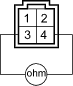
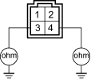
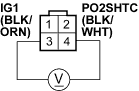

DTC P0135: Primary HO2S (Sensor 1) Heater Circuit Malfunction
- Reset the ECM (see page 11-4).
- Start the engine.
Is DTC P0135 indicated?
YES - Go to step 3.
NO - Intermittent failure, system is OK at this time. Check for poor connections or loose wires at the primary HO2S (Sensor 1) and at the ECM. 
- Turn the ignition switch OFF.
- Disconnect the primary HO2S (Sensor 1) 4P connector.
- At the primary HO2S side, measure resistance between the primary HO2S (sensor 1) 4P connector terminals No. 3 and No. 4.
PRIMARY HO2S (SENSOR 1) 4P CONNECTOR

Terminal side of male terminals
Is there 10 - 40 ohms?
YES - Go to step 6.
NO - Replace the primary HO2S (Sensor 1).

- Check for continuity between body ground and the primary HO2S (Sensor 1) 4P connector terminals No. 3 and No. 4 individually.
PRIMARY HO2S (SENSOR 1) 4P CONNECTOR

Terminal side of male terminals
Is there continuity?
YES - Replace the primary HO2S (Sensor 1).
NO - Go to step 7.
- Turn the ignition switch ON (II).
- Measure voltage between the primary HO2S (Sensor 1) 4P connector terminal No. 3 and No. 4.
PRIMARY HO2S (SENSOR 1) 4P CONNECTOR

Wire side of female terminals
Is there battery voltage?
YES - Go to step 9.
NO - Go to step 12.
- Turn the ignition switch OFF.
- Disconnect ECM connector A (31P).